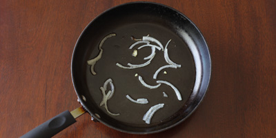
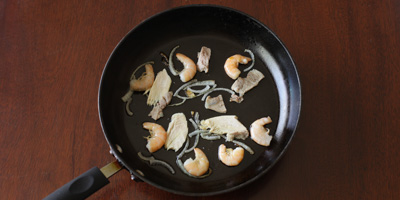

Vietnamese Crepes(Bánh Xèo)Recipe
Ingredients
Batter
- 9 ounces rice flour
- 3 ounces all-purpose wheat flour
- 2-3 teaspoon turmeric, depending on color preference
- 3.5 cups water
- 1 14oz/400ml can coconut cream (or coconut milk, if unavailable)
- 1 teaspoon salt
- 1 sprig scallion (~6-7 leaves), chopped small about 1-2 cm long
Filling
- 1 pound shrimp without heads, sized 45/50 or 60/70
- 1.5 pounds pork belly
- 1 onion, medium sized, thinly sliced
- 1-1.5 pounds bean sprouts
- ½ cup dry mung beans (optional)
Vegetables
- mustard greens (caỉ xanh)
- mint
- cilantro, optional
- Vietnamese perilla (tía tô), optional
Dipping sauce
- Vietnamese fish sauce
Instructions
Prepare Batter
1.Combine all batter ingredients except scallions in a large bowl for at least 3 hours,
or overnight.Add scallions only right before making the crêpes.
Prepare Fillings
1.Steam or soak mung beans in water until soft.
2.Boil pork until cooked through. Slice thinly.
3.Wash bean sprouts and veggies
Making Banh Xeo - Each crepe takes about 5-7 minutes
1.On medium-high heat add 1-2 teaspoons of oil and some onions
2.Immediately add a few pieces of pork and shrimp. Sauté, lightly mixing until very lightly browned.
3.Pour in some batter and quickly tilt & rotate the pan so the batter is evenly spread.
Add more batter if it wasn't enough to cover the pan.
4.Add some mung beans, bean sprouts, and cover with a lid for 2-3 minutes,
or until bean sprouts are slightly cooked.
The batter should also be slightly cooked and transparent around the edges.

Here is the video !